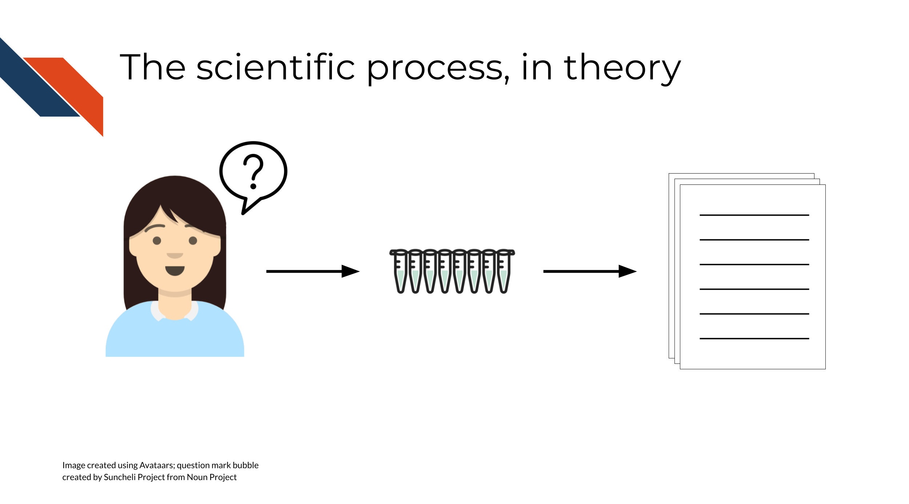
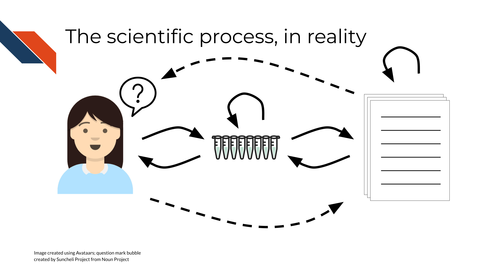
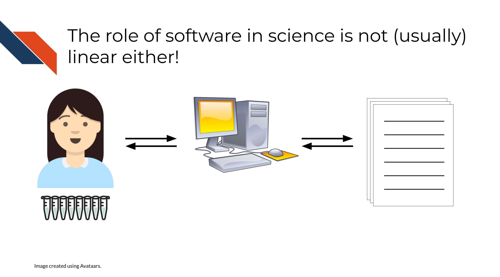
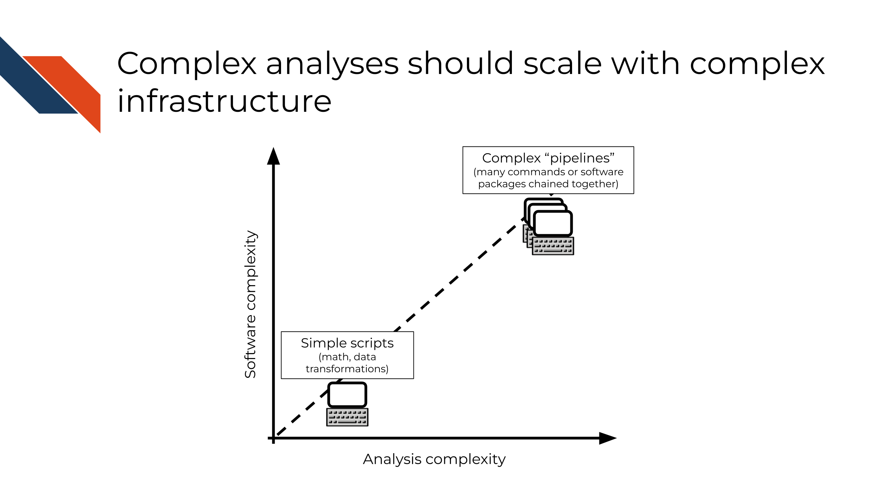
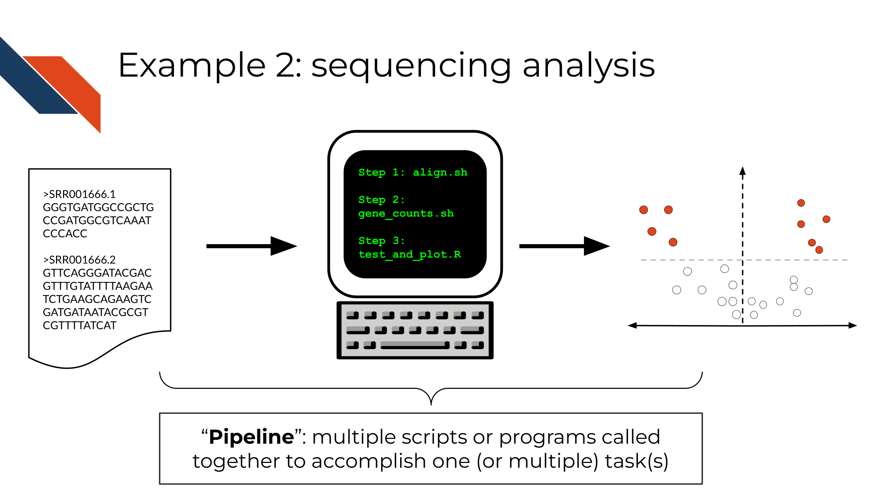
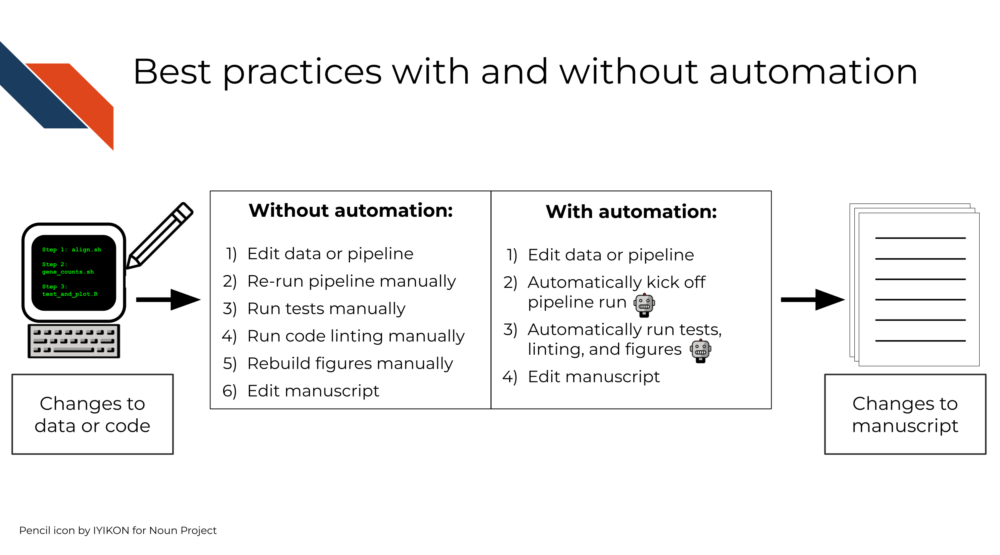

Chapter 2 Scientific software development best practices
2.2 Science and software as iterative processes
Scientific papers are often arranged as a list of methods and results, building on themselves more or less sequentially. Each figure follows from the previous figure or text description, to describe the data that support a hypothesis or illustrate a conclusion in a linear, “story”-like order.

However, the modern process of doing science, itself, is rarely linear. It is not realistic to do an experiment, and write a manuscript, and publish the paper, in that order and with no other complications – usually, there is some amount of iteration involved on one or more of these steps:
- You might do an experiment, then summarize it, then run more experiments based on the results to confirm/test/extend your findings
- You might do an experiment, write a manuscript, then revise the manuscript based on feedback from other scientists
- You might submit a manuscript, then a reviewer may request revisions or additional experiments, which will require you to go back and revisit your experimental setup and conclusions
As scientists, we don’t generally expect science to be a static, “write once and forget” process.

The same idea applies to developing research software! Rarely, you might be able to write a script or program for a scientific study and use it once, for a single well-defined purpose. But more often, you’ll write a script (or join several of them together in a more complex pipeline) and reuse it, possibly with changes or extensions as the project progresses.

In this course, through the lens of automation, we hope to familiarize you with some of the skills necessary to think about research software in an iterative way, from the beginning of a research project. Although software development is not generally rewarded directly in academia, it turns out that writing good software does have less obvious rewards, even within the traditional academic structure. For example, software that is easy to install tends to be cited more often (Mangul et al. 2019), and software that is more consistently maintained tends to be more accurate (Gardner et al. 2022).
2.3 Software complexity as a spectrum
Not all software is complex, and not all software requires complex infrastructure (or automation, for that matter)! It can be useful to think about the complexity of software engineering infrastructure necessary for a project proportionally to the complexity of the software itself:
- Simple software (math, data transformations, procedural/rule-based scripts) requires simpler infrastructure.
- Complex software (e.g. “pipelines” composed of many commands/software packages chained together, “libraries” that are intended to be reused in many different applications) requires more complex infrastructure, to check assumptions and test reproducibility at each step.

We will take a closer look at two concrete examples, one on each end of the software complexity spectrum, in the next section.
2.4 Examples
2.4.1 t-test
Imagine that you have two sampling distributions (lists/arrays of numbers) and you want to test whether the means of the distributions are statistically equivalent or not.
This is the setup for a t-test.
t-tests are implemented in standard functions in base R and Python scipy library, as well as most other commonly used programming languages.

In both R and Python, a t-test is a very well-defined, specific function that takes two lists of numbers and returns the t-statistic and p-value. Since this is a part of a standard, widely used library in each language, it is already tested as part of those libraries. In your own software, you might need to do some verification of your input (for instance, what happens if you pass an empty list of numbers?) but probably not too much, since you can be fairly confident that the t-test function does what it is documented to do in the programming language you choose to use.
2.4.2 Sequencing analysis
Imagine that you have a list of reads from a DNA sequencing machine, and you want to use these data to answer a biological question, or to make a plot/visualization to communicate a biological insight. This is a much less well-defined problem than our previous example, with many more independently operating components, and many more subjective decisions that a researcher must make along the way. Complex data analyses means complex decisions! This often means that decisions made are not so cut and dry and should rely on the scientific context of the data. In other words, analyses often are tailored to reflect the biology (or other science) and or perhaps the experimental goals.

Most sequencing analyses require multiple steps (i.e. different programs or scripts), and generate multiple intermediate files (e.g. read counts, normalized counts, quality information) that can be checked to verify that the pipeline is proceeding as expected. Sequencing analyses can also take hours or days to run, as compared to the t-test example which runs effectively instantaneously.
This means that:
- The set of steps that need to take place is more complex than our previous example, and each step in the analysis likely builds from previous steps. Finding errors early in the process can save a lot of time and effort in later steps.
- A longer or more complex set of steps often means there are more ambiguous/“gray area” decisions that need to be made along the way. This usually means more iterations or experiments, to explore what works and what doesn’t. Introducing reproducible software practices from the ground up will help to make this exploratory process easier and clearer.
2.5 Automation for scientific software
Good software practices do not necessarily have to rely on automation. However, complex projects can be unwieldy to check and revise in the absence of some sort of automated process to kick them off automatically, without too much human intervention. Steps that are involved might include:
- Rerunning the software itself (often on new or modified input data)
- Software testing
- Code style linting
- Rebuilding figures or processed datasets
- And many more!
Each of these steps could be individually run by hand. Alternatively, they could be combined in a central script that runs all the steps in order or in parallel, which can also be triggered manually. Such a central script can itself be considered a form of automation.
Automation like that of GitHub Actions, in contrast, can provide a “single point of truth”: a single central script to run these steps, and a single set of (automated) criteria for when to run them. This eliminates the need for you to remember to run tests, to clean up your code, to rebuild figures, or to kick off similar standard processes or commands on your own.

Later in the course, we will talk more specifically about what exactly automation via continuous integration looks like, and go into more depth as to its uses and benefits.